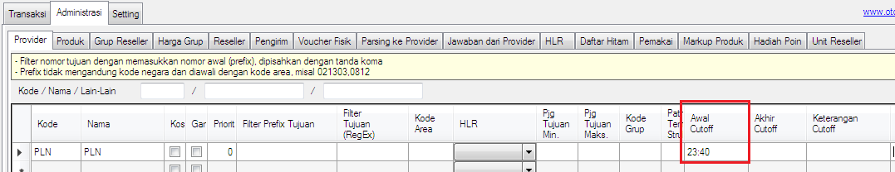

Cutoff Provider
Provider atau Supplier tertentu biasanya melakukan cutoff (penghentian transaksi) terhadap produknya guna melakukan rekonsiliasi data di waktu tertentu setiap harinya, misalkan jam 23:40 s/d 23:59. Saat itu terjadi, tentu transaksi Reseller kita yang dihostkan ke mereka akan menggantung statusnya. Untuk menangani kondisi tersebut di v4.0.0 terdapat fitur bernama Cutoff Provider klik disini, dimana dengannya kita dapat mengatur kapan server kita mulai melakukan cutoff dan kapan selesai cutoff khusus pada produk supplier tersebut mengikuti jadwalnya secara otomatis.
Cutoff Provider berguna untuk menghentikan transaksi suatu produk dari provider tertentu di periode waktu tertentu secara otomatis. Fitur ini hanya tersedia di edisi Ultimate, namun tak perlu khawatir bila edisi OtomaX yang Anda gunakan saat ini bukan edisi tersebut, Anda dapat melakukan upgrade sekarang dengan klik disini dan atau membeli OtomaX baru dengan klik disini. Untuk mengaturnya ikuti panduan berikut ini:
- Masuk ke Administrasi -> Provider -> tentukan Provider yang akan diterapkan cutoff, contoh: PLN.
-
Pada Awal Cutoff isi waktu cutoff provider dimulai sesuai jadwal mereka, misal: 23:40.

- Pada Akhir Cutoff isi waktu cutoff provider berakhir sesuai jadwal mereka, misal: 23:59
-
Pada Keterangan Cutoff isi pesan yang akan diinformasikan ke Reseller kita waktu cutoff provider berlangsung, misal: Sedang Cutoff.
Pesan di kolom Keterangan Cutoff ini akan mengisi parameter [keterangan] yang berada di Setting -> Format Balasan -> kolom Format.
- Selanjutnya klik tombol Simpan dan tutup buka OtomaX.
- Selesai.
Dengan diatur seperti diatas, produk - produk dari provider PLN di jam 23:40 s/d 23:59 yang ditransaksikan Reseller akan ditolak dan Reseller diberi informasi bahwa produk PLN sedang cutoff. Anda dapat menerapkan hal sama pada provider atau supplier yang lain.